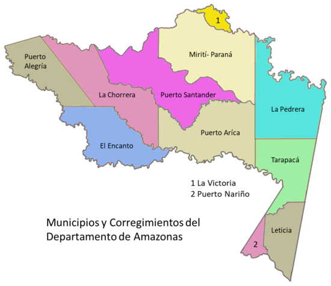

Bienvenidos al departamento del amazonas
Amazonas es uno de los treinta y dos departamentos que forman la República de Colombia. Su capital es Leticia. Está ubicado en el extremo sur del país, en gran parte al sur de la línea ecuatorial, en la región Amazonia. Con 110 000 km² es el departamento más extenso de Colombia, con unos 83 808 habitantes en 2023, el cuarto menos poblado por delante de San Andrés y Providencia, Guainía y Vaupés, el menos poblado— y con 0.76 Hab/km², el tercero menos densamente poblado, por delante de Vichada y Guainía, el menos densamente poblado.
